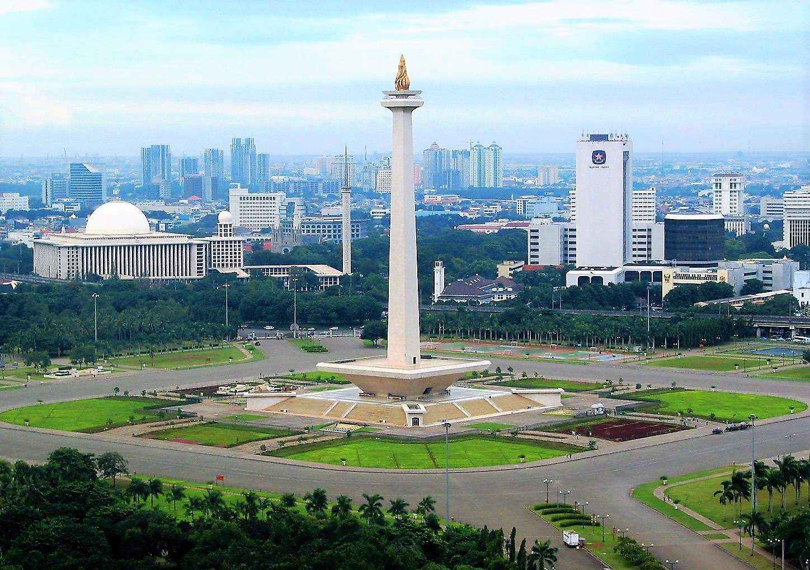

Jakarta
Jakarta is the capital and most populous city of Indonesia. DKI Jakarta only has divisions under it in the form of five administrative cities, namely Central Jakarta, West Jakarta, East Jakarta, North Jakarta, South Jakarta and one administrative district, namely Seribu Islands Regency.
Jakarta is located on the northwestern coast of Java Island. Jakarta is known as the center of business, politics and culture. Jakarta received the nickname The Big Durian because it is considered a city comparable to New York City (Big Apple) in the United States.
